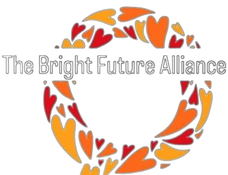

This website uses cookies to ensure you get the best experience on our website.
Learn more
OK

The Bright Future Alliance
Home
About
Programmes
News & Media
Contact
Donate
Program
Original text
Rate this translation
Your feedback will be used to help improve Google Translate
Original text
Rate this translation
Your feedback will be used to help improve Google Translate